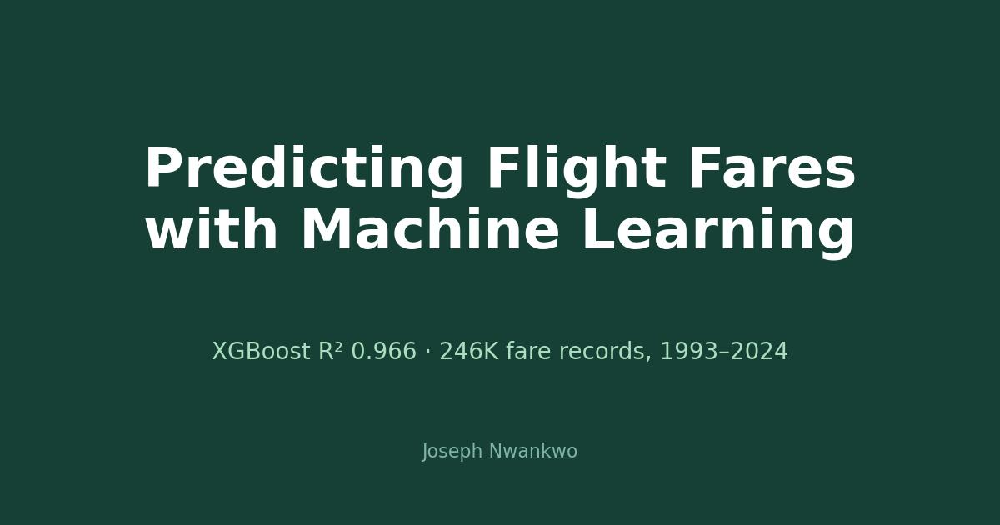

At a glance: Python, pandas, scikit-learn, XGBoost · 245,955 records × 23 columns (city pairs, quarters, years, fare data, 1993–2024) · Linear Regression vs. Decision Tree vs. Random Forest vs. XGBoost · best: XGBoost R² 0.966, RMSE 0.184.
The data.
Airline market and fare records between city pairs and airports, with 23 columns covering routes, quarters, years, and fare information. The time range runs from 1993 to 2024 (mean year ~2008) — three decades of pricing history. First job: explore it, clean it, handle nulls and outliers.
What the exploration showed.
The highest average fares cluster on specific city pairs — long-haul routes, less competitive corridors, premium carriers. That pattern is exactly what a model can learn: route structure plus time effects explain most of the price.
The models.
Four regressors, same split, judged on R², MAE, MSE, and RMSE. Linear Regression managed R² 0.941 — respectable, and proof the signal is real. Decision Tree reached 0.932. Random Forest climbed to 0.964. XGBoost took it at R² 0.966 with RMSE 0.184.
A simple linear model already explains 94% of fare variance — but the last few points of accuracy, where the money is, belong to gradient boosting.
What it is good for.
Buy-or-wait guidance: predicted vs. current fare tells travelers whether to book now. Revenue management: airlines already do this — now you know how. Budget planning: finance teams can forecast travel spend per route.
What is next.
Adding seasonality features, testing time-series splits (no peeking into the future), and trying the model on live fare feeds.